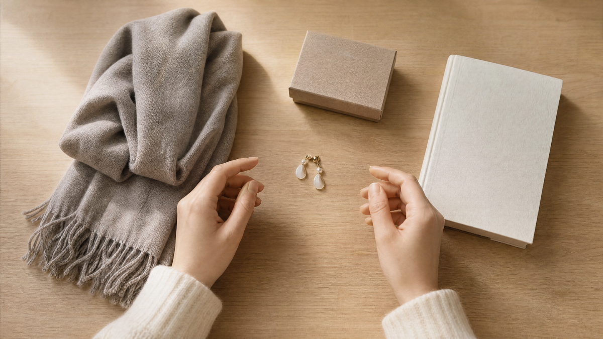

Вы когда-нибудь получали подарок, который явно был не новым? Или сами дарили вещь, которую когда-то подарили вам? На первый взгляд, ничего страшного: вещь хорошая, человеку нужна. Но в народной традиции «дарить дареное» — это почти всегда плохая примета. И причины тому есть.
Разберемся, почему нельзя передаривать подарки, что об этом говорят приметы и этикет и что делать, если очень хочется кому-то отдать ненужную вещь.
Откуда пошла примета
Запрет на передаривание уходит корнями в древние представления о том, что вещь хранит энергию своего владельца. Когда вам что-то дарят, вы получаете не просто предмет, а часть тепла, пожеланий и удачи дарителя.
Если вы передариваете эту вещь дальше, вы как будто «отдаете» чужое пожелание. В народе верили, что вместе с вещью можно передать и свою судьбу, и проблемы, и даже болезни. Особенно если подарок был сделан с душой, а вы от него избавились.
Есть и второй смысл. Подарок — это связь между двумя людьми. Передаривая его, вы эту связь разрываете. Вы говорите дарителю (даже если он не узнает): «Твой жест для меня ничего не значил».
Что говорят приметы
Приметы, связанные с передариванием, довольно строгие.
Нельзя дарить вещи, которые вам подарили. Считается, что так вы отдаете свое счастье и удачу. Особенно это касается украшений, часов, кошельков и всего, что носится на теле.
Нельзя дарить дареное на свадьбу. Это к разводу. Молодые должны начинать жизнь с чистого листа, а не с чужих вещей.
Нельзя дарить дареное на новоселье. В новый дом нужно вносить только новое, чтобы не притащить туда чужие проблемы.
Нельзя передаривать то, что подарил близкий человек. Это воспринимается как оскорбление. Если он узнает (а он может узнать), это будет удар по отношениям.
Хорошая примета: если вы дарите вещь, которую сами сделали или купили специально для этого человека. Тогда она несет только вашу энергию и ваши пожелания.

Что говорит этикет
С точки зрения этикета, передаривание — это тоже не очень хорошо. Но здесь есть нюансы.
Передаривать можно, если вещь новая. Если вам подарили что-то, что вам не подходит по размеру или вкусу, но вещь абсолютно новая (с бирками), и вы точно знаете, что она понравится другому человеку — это допустимо. Главное, чтобы первоначальный даритель не узнал.
Нельзя передаривать вещи с историей. Если это семейная реликвия, вещь с гравировкой или что-то, что явно было сделано для вас — это табу. Даже если она вам не нравится.
Нельзя передаривать то, что вам подарили недавно. Если человек увидит вещь, которую он подарил вам месяц назад, у другого человека — это скандал.
Нельзя передаривать вещи, которые явно были в использовании. Если вещь потеряла вид, это уже не подарок, а «отдавание хлама». Это обидно для получателя.
Что делать, если очень хочется отдать вещь
Бывает так, что вещь вам не нужна, но выбросить жалко. И тут возникает вопрос: что с ней делать?
Способ 1. Отдать тому, кто не знает дарителя. Если вещь новая и вы точно знаете, что она понравится человеку, который не пересекается с первоначальным дарителем — можно рискнуть. Но это риск.
Способ 2. Продать. Если вещь дорогая, но не нужна, её можно продать. Тогда вы не «дарите» её, а «продаете». Примета не работает.
Способ 3. Отдать на благотворительность. Если вещь хорошая, но не нужна, её можно отдать в приют, в фонд или в церковь. Это уже не «передаривание», а «помощь». И это считается добрым делом.
Способ 4. Сказать правду. Если вы получили подарок, который вам не нужен, лучше честно сказать об этом дарителю. «Спасибо, но я этим не пользуюсь. Может, отдадим это тому, кому нужнее?» Это честнее, чем тихо передаривать.
Как правильно дарить, если вы получили что-то не то
Если вы получили подарок, который вам не нужен, и хотите от него избавиться, лучше сделать это сразу и честно.
Скажите спасибо. Даже если подарок не ваш. Даритель вложил в него внимание, и это важно.
Не притворяйтесь, что он вам нужен. Если вы скажете «вау, как здорово», а потом передарите, это будет обман.
Предложите решение. «Спасибо, но я не ношу такие вещи. Может, ты подаришь это кому-то другому?» Это честно и уважительно.
Не передаривайте тайно. Если даритель узнает, что вы отдали его подарок, это будет обидно. Лучше сказать сразу.
Что в итоге
Передаривание — это не просто «передача вещи». Это передача связи, энергии и смысла. И если вы делаете это необдуманно, вы можете обидеть человека или, по примете, потерять удачу.
Но если отнестись к этому с умом — отдать ненужное тому, кому оно действительно нужно, — можно сделать доброе дело и никого не обидеть.
Моя бабушка однажды получила в подарок красивый платок. Он ей не подошел по цвету. Она не стала его передаривать. Вместо этого она отдала его соседке, которая давно о таком мечтала. И сказала: «Это мне подарили, но я знаю, что тебе это нужнее». Соседка была счастлива. И бабушка тоже. Потому что она не «избавилась от подарка», а «передала добро».